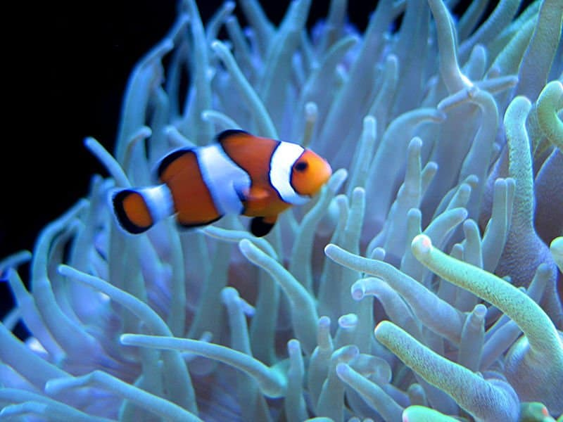

Own


The Experience of Having a Salt Walter Tank at Home
It takes a lot of work and responsibility to keep your tank, especially if you decide to add corals to it. You need a special light that simulated the day and night, did you know that corals also do photosintes? You also need a filter if you want to made your own salt water at home. If you travel you must need to have automatic feeders and leave water mixed with salt and pumps that can automatically refill your tank, especially during summer because the water evaporates faster compared to the colder seasons. Having the right equipment is key and gives you peace of mind because the maintance of the tank is going to be sporadic. We learned all of these things from our trusted store Sea King Aquariums located in Bellevue. They are always there to answer all our doubts.Since we usually travels twice a year, our friends help us, we always have someone taking care of our tank. Technolgy also help us a lot, Alexa controls our tank! we even have a camera to see out tank when we are out of town.
It is also important to perform some testing once a week. The tests that we must do once a week are:
- Ammonia
- Nitrate
- Alkalinity
- Phosphate
- Calcium
- Salt